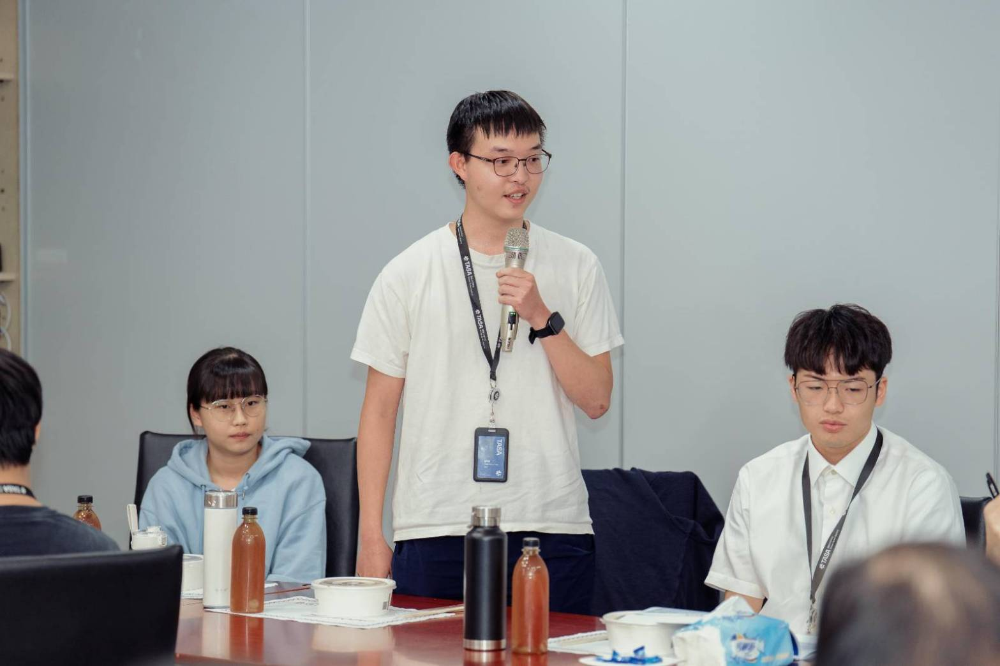
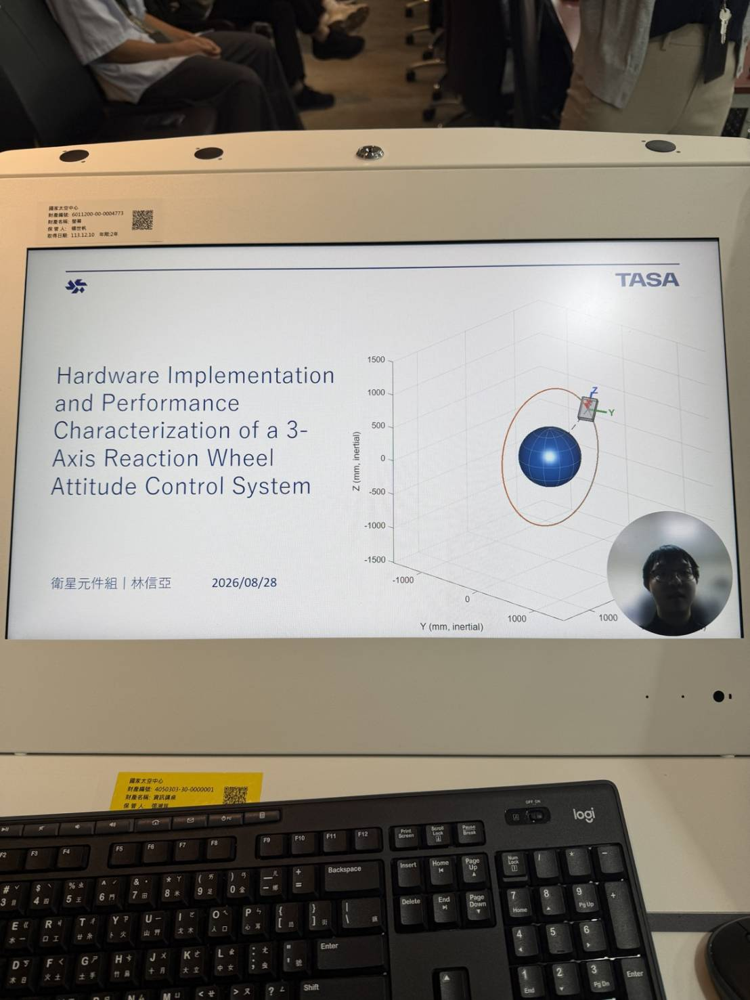

Pointing a satellite with spinning wheels
A satellite has nothing to push against. To turn it, you spin a wheel inside it one way and the body turns the other. I built the bench electronics and the flight firmware that command four such wheels, and the simulator that predicted what they would do, then put the two together on an air bearing stage.
Turn the satellite
Click anywhere on the ring to give the satellite a new heading. A proportional derivative controller commands torque on the wheel; the wheel spins up one way and the body turns the other, because their angular momenta have to cancel. Watch the momentum bar: what the body gains, the wheel loses, exactly.
Add a steady disturbance torque and the wheel has to keep speeding up just to hold still. When it reaches its speed limit it can give no more, and the body drifts. That is momentum saturation, and it is why real satellites also carry magnetorquers or thrusters to dump momentum.
The real controller is three axes, quaternion based, and runs on the IMU's attitude estimate; this page shows one axis because that is where the physics is visible. Everything else in the project sits on top of this picture: the pyramid that turns three axis torque into four wheel commands, the firmware that puts those commands on a wire, and the bench that measured whether the model was right.
Four wheels, three axes
Three axes need three wheels; a fourth gives redundancy and lets the array share load. Tilted into a pyramid at a mounting angle from the base plane, each wheel contributes to two axes. A torque demand on the body is turned into four wheel torques by the pseudo-inverse of the geometry matrix, the allocation that minimizes the total wheel effort. Drag the demand and watch the split. Then move the mounting angle and watch the axis capacities trade against each other.
Drag on the pyramid to rotate the view. Null motion adds a pattern of wheel torques that cancels exactly, so the body feels nothing while the wheels redistribute momentum among themselves. That one dimensional null space is what four wheels buy over three.
Two angles fall out of the geometry, and the plot marks both. Where the pitch and roll capacity curve, 2 cos β, crosses the yaw capacity curve, 4 sin β, is 26.57°, the angle at which every axis can be driven equally hard. Where the diagonal of the geometry matrix times its transpose balances, 2 cos2 β = 4 sin2 β, is 35.26°, the angle that minimizes the worst case wheel effort. They answer different questions, and choosing a mounting angle means choosing which question you are asking.
What 727 ms does to a control loop
The controller reads the IMU, computes a torque, sends it down an RS-422 link to the wheel, and the wheel's motor responds. Every step takes time, and a controller that acts on where the satellite was is a controller fighting itself. The combined communication and motor latency of the bench started at 727 ms and ended at 263 ms after the protocol and firmware work. Same plant, same gains, two delays.
Reference curves for 727 ms and 263 ms stay on the plot. The bright curve is your delay.
Delay does not change the plant, it removes phase margin. A derivative term is supposed to brake the motion; delayed, it brakes where the satellite was a moment ago, which is sometimes the wrong direction. Past a certain delay the loop cannot settle at all and hunts around the target for as long as you let it run. Cutting the latency by nearly two thirds was worth more than any gain tuning.
The bench
None of this exists until the wheel can be commanded from a board. The test circuit I designed in KiCad and built puts an ESP32-S3 at the center: a nine axis IMU on I2C for attitude feedback, an RS-422 transceiver driving four wheel modules on a shared bus, a DC-DC buck converter for power, and safety interlocks in both hardware and software. Operator telemetry runs over a second transport back to a laptop.
Dots are traffic: IMU samples into the controller, command frames out to the wheels and their replies back, telemetry to the operator.
The firmware is around 10,000 lines of C and C++ across 30 modules: the RS-422 actuator protocol, the IMU driver, dual transport operator telemetry, and autonomous fault detection, isolation and recovery. The part I would point at first is the verification. I did not implement the wheel protocol from the specification and trust it. I captured the actual bytes on the wire with an oscilloscope and decoded them against an independent implementation, and the disagreements found four firmware defects, including memory corruption that put the controller in a reboot loop.
From a model to a bench
The deliverable was an actuator sizing and trade study across 8 parameters, 12 metrics and 6 slewing maneuvers, written up in a 768 paragraph technical report with 21 tables and 40 figures, and an A1 conference poster.
Photographs




Specific project details are covered by confidentiality. Every simulation on this page is generic physics with made up inertias and gains; the only project numbers here are the ones already on my resume.